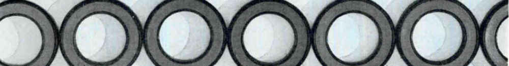

There are some animals, as well as most plants, that can grow back a lost limb. Humans are like that in relation to the mask we wear. As soon as we take off a mask, we begin to grow another one.
When refusing to play a role, one is merely playing a different role. Nevertheless, this means that one is not stuck with the same role forever; it’s only a matter of reading a new job description, learning the new skills required, and assuming the new behaviors.
Identity is a tool, not a prison.